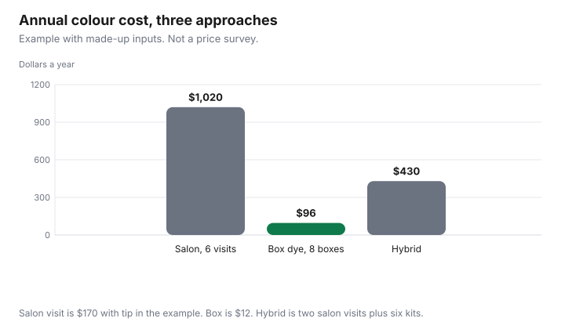

Personal Care · Canada
Home Hair Colour vs Salon in Canada: Real Cost, Risks and a Hybrid Plan
Home hair colour is usually far cheaper than the salon in Canada: in a made-up example year, salon colour cost $1,020, box dye $96, and a hybrid $430. Health Canada requires coal-tar hair dyes to include patch-test instructions, so do a patch test before each use. Colour upkeep is a repeating bill: the salon visit, or the box, or a mix of the two, times the number of times you do it in a year. The dollars in the table are an example with made-up inputs so the three approaches can be compared. They are not a salon quote and not a drugstore price. The safety section is different. It uses Health Canada’s hair-dye labelling page, as of 29 Sep 2026. This is not medical advice, and it is not a ranking of dyes. An offer type is disclosed.
Key takeaways
- Annual cost is the visit or the box, including tip, times the applications you will do. The example year is $1,020 salon, $96 box, and $430 hybrid, all made up.
- Health Canada says permanent and semi-permanent hair dyes that use coal-tar dye bases must warn about irritation, must not be used on eyebrows or eyelashes, and must include patch-test instructions.
- Do the patch test before each use. Sensitivity can appear after earlier uses felt fine. Stop if the skin reacts. This is not medical advice.
- Covering greys and changing the colour are different jobs. The grow-out interval is yours, not a number this page found in a rule.
- A correction cost is the salon’s quote after they see the hair. The illustration in the table is made up.
Salon colour costs and upkeep cycles
A salon colour is the price on that salon’s menu for the service you book, plus the tip you leave, plus any add-on you accept. A root retouch and a full colour are different services.
A gloss on top is a third line if it is priced separately. This guide does not cite a menu, so it does not quote a city. Ask for the service by name and write the number down before the appointment, not after the card machine suggests a tip.
The cycle is how many weeks you wait. Six visits in the example are not a recommendation. They are 6 times a made-up $150 service and a made-up $20 tip, which is $170 a visit and $1,020 a year. If you wait longer, the year falls. If the grow-out bothers you sooner, the year rises even when the menu does not. Put that annual figure on a zero-based budget as its own line. The cut is a separate line, on the haircut guide.
Box dye cost per application
A box is the price of the kit divided by the applications you get from it. Many kits are one application.
A kit that says it covers more than one use only counts as more than one if you will mix it that way and use it before you throw it out. Gloves, an old towel, and a stain on a sink are real costs if you replace them. They are not in the example, because no kit was priced.
The example with made-up inputs is eight boxes at $12, which is $96 a year, or $12 an application. Your box may be more. Your count of applications may be less if you stop halfway through the year. A store-brand kit and a name-brand kit are the same division. The household store-brand guide is the unit-price habit for paper and detergent. Do not copy a paper price into this aisle. Developer strength and shade are on the box. This page does not pick either one.
Patch tests and allergy risks (Health Canada labelling)
Health Canada’s hair dyes page, as of 29 Sep 2026, with page details dated 2016-12-05, says permanent and semi-permanent hair dyes that use coal-tar dye bases and intermediates must carry three things on the label: a warning that the product may cause skin irritation on certain people, a warning not to use it to dye eyebrows or eyelashes because that may cause blindness, and instructions for a preliminary patch test. The same page says to use the patch test whenever you use those dyes, and to repeat it before each use, because sensitivity may not show up until you have used the products a number of times.
The patch test on that page is: wash a small area of skin behind the ear or on the inner forearm, apply a small amount of the cosmetic, and let it dry. After 24 hours, wash the area gently with soap and water. If there is redness, burning, itching, blistering, or irritation, stop. Health Canada’s cosmetics safety page, page details 2019-02-28 on the copy as of the same date, gives the same 24-hour steps when the product directions say to do a patch test. The Cosmetic Ingredient Hotlist, on the consumer product safety page as of 29 Sep 2026, says coal-tar dyes used in those hair dyes need cautionary statements, and that a name missing from the hotlist is not by itself proof of safety. Follow the instructions in the box you bought. This article is not medical advice. A reaction is a reason to stop and to get medical help, not a reason to try a cheaper box.
| Step | What the pages say | What you do |
|---|---|---|
| Read the dye warning | Irritation is possible. Do not use the product on eyebrows or eyelashes | If the box is a permanent or semi-permanent coal-tar dye, those warnings should be there |
| Patch test | Behind the ear or inner forearm, small amount, wait 24 hours, then wash | Do it before each use, not only the first time |
| Stop if the skin reacts | Redness, burning, itching, blistering, or irritation | Do not apply the dye. Seek care if you need it. This page cannot assess a reaction |
| Hotlist | Restricted ingredients, and absence from the list is not proof of safety | Look up a name you are unsure about. Do not treat a missing name as a clearance |
Covering greys vs changing colour
Covering greys at the root is a smaller job than changing the colour of the lengths. The root job repeats on the grow-out.
The change job may need more than one appointment, and the upkeep may still be a root job afterward. Mixing the two in one annual number hides which one is expensive. If you only need the roots, do not price a full highlight you will not book. If you want a change, the first year includes the change plus the upkeep, not the upkeep alone.
How often greys need attention is your tolerance, not a figure from Health Canada. The example uses six salon visits or eight home applications only to fill a year. Shorten the gap in the worksheet if you retouch sooner. A household cap is useful here because the bill feels optional until you add it up.
Hybrid approach: salon base, home root touch-ups
A hybrid is a salon service for the base colour, then home kits for roots between salon visits. Tell the salon what you use at home.
The home kit still needs the patch test on its own instructions, even if you have sat in that salon for years. The example with made-up inputs is two salon visits at $170, which is $340, plus six root kits at $15, which is $90, for $430. That sits between the $1,020 salon year and the $96 box year in the example. It is not a promise that your salon will agree to the plan.
The hybrid fails when the home colour does not match the salon colour and you book a correction. That correction replaces the saving. It also fails when you buy kits and do not use them. Count kits you use, not kits you own.
Fixing mistakes and what that costs
A colour correction is a quote after a stylist sees the hair. Bleach overlap, a too-dark box, and a tone you dislike are different repairs, and this guide does not cite a price for any of them.
Ask for the price before the work starts. If you cannot get a number, you do not yet know the cost of the mistake. The blank row is for that quote. The filled row is an example with made-up inputs so you can see a repair next to a year of boxes.
| Approach | Count in the example | Price in the example | Year |
|---|---|---|---|
| Salon | 6 visits | $150 + $20 tip | $1,020 |
| Box dye | 8 boxes, one use each | $12 | $96 |
| Hybrid | 2 salon visits and 6 root kits | $170 and $15 | $340 + $90 = $430 |
| Correction, illustration | 1 repair on top of the box year | $250 made up | $96 + $250 = $346 |
| Your quote |

Sources
- Health Canada, “Hair dyes,” as of 29 Sep 2026. Page details on that copy were dated 2016-12-05. Warnings for permanent and semi-permanent coal-tar dyes, including eyebrows and eyelashes, and the 24-hour patch test repeated before each use.
- Health Canada, “Use cosmetics safely,” as of 29 Sep 2026. Page details on that copy were dated 2019-02-28. The same patch-test steps when the directions call for a test. A cosmetic is defined there as a substance used to clean, improve, or change complexion, skin, hair, teeth, or nails.
- Health Canada, Cosmetic Ingredient Hotlist, consumer product safety page, as of 29 Sep 2026. Coal-tar hair dyes need the caution and the patch-test directions. Absence from the list is not proof an ingredient is safe.
- Annual dollars and the $250 repair are examples with made-up inputs.
Frequently asked questions
Is home hair colour cheaper than the salon?
On the example with made-up inputs, eight boxes at $12 are $96 a year and six salon visits at $170 including tip are $1,020. That gap is arithmetic on invented prices, not a quote from a salon or a drugstore. Your comparison is your menu price, your tip, your box price, and the number of applications you will actually do.
How often do greys need touching up?
As often as the grow-out bothers you, which this page will not turn into a medical schedule. The example uses six salon visits or eight home applications only so the annual column has a count. Write down the weeks you actually wait, then multiply. A shorter gap is a higher annual cost even when each visit is unchanged.
Do I really need a patch test?
Health Canada’s hair dyes page, as of 29 Sep 2026, says to use the patch test whenever you use permanent or semi-permanent hair dyes, including before each use, because sensitivity can show up after earlier uses felt fine. The same page describes washing a small area behind the ear or on the inner forearm, applying a small amount, and washing it after 24 hours. Stop if the skin is red, burning, itching, blistering, or irritated. This is not medical advice.
Can I mix salon and home colour?
You can split the jobs, and you should tell the salon what you put on your hair at home. The example hybrid is two salon visits plus six root kits, which is $430 on made-up prices. A home product on top of a salon formula can still need the patch test on the home product’s instructions. If the colours fight, the correction is a new quote, not a line in this table.
What does it cost to fix a home colour mistake?
Whatever the salon quotes for that head of hair, after they see it. The worksheet has a blank for the quote and one made-up illustration so the risk is visible in dollars. Do not treat the illustration as a salon’s fee. A patch test does not guarantee the colour will match, and it does not price the repair.
Researched and drafted with AI assistance and fact-checked against official Canadian sources. How we create content.
Disclosure: Amazon.ca storefronts are an offer type if you later shop for a home colour kit or a tool. Saving Optimizer may earn a commission if a partner link is added later. No partnership is claimed with Amazon, a salon, or a dye brand. Education only. This page does not name a best box dye, salon, or shade.